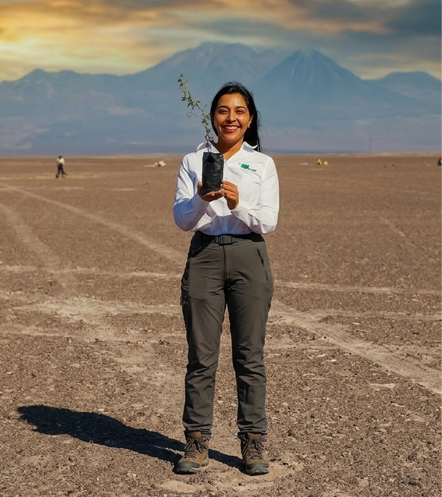
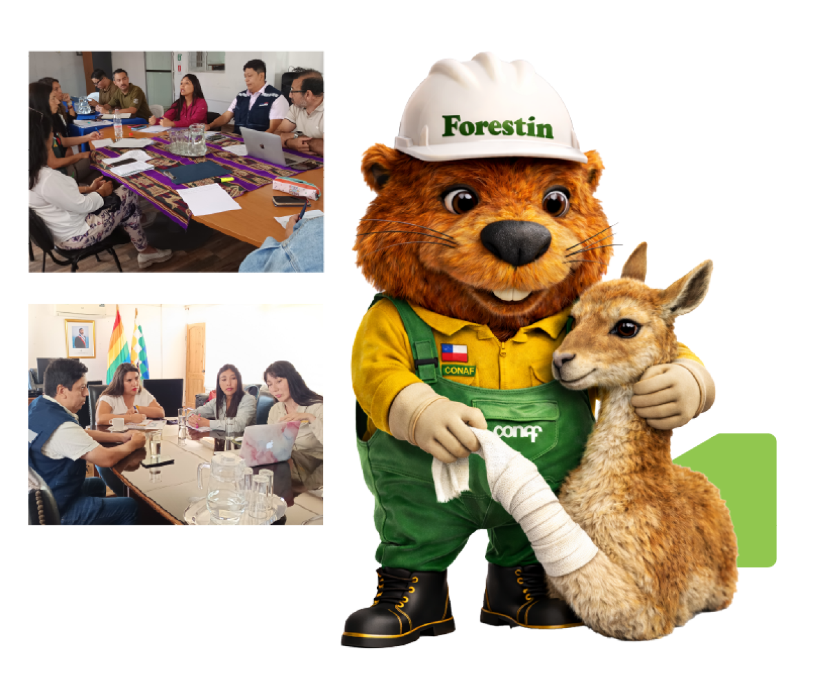
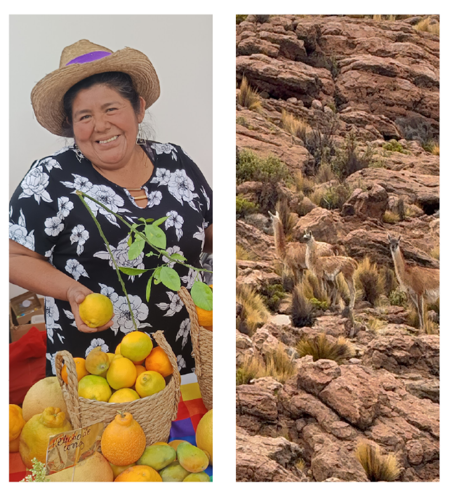
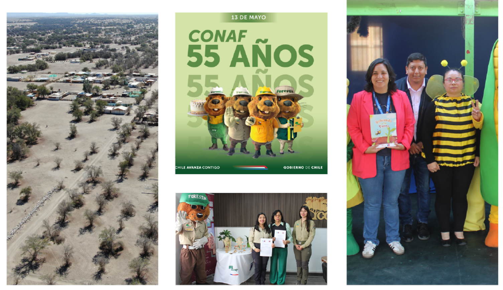
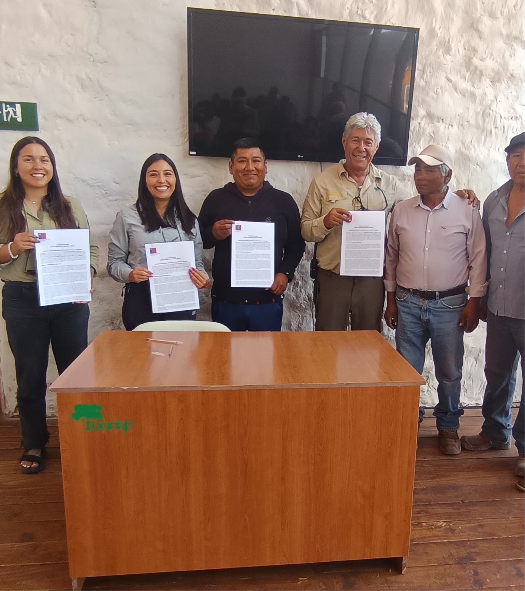
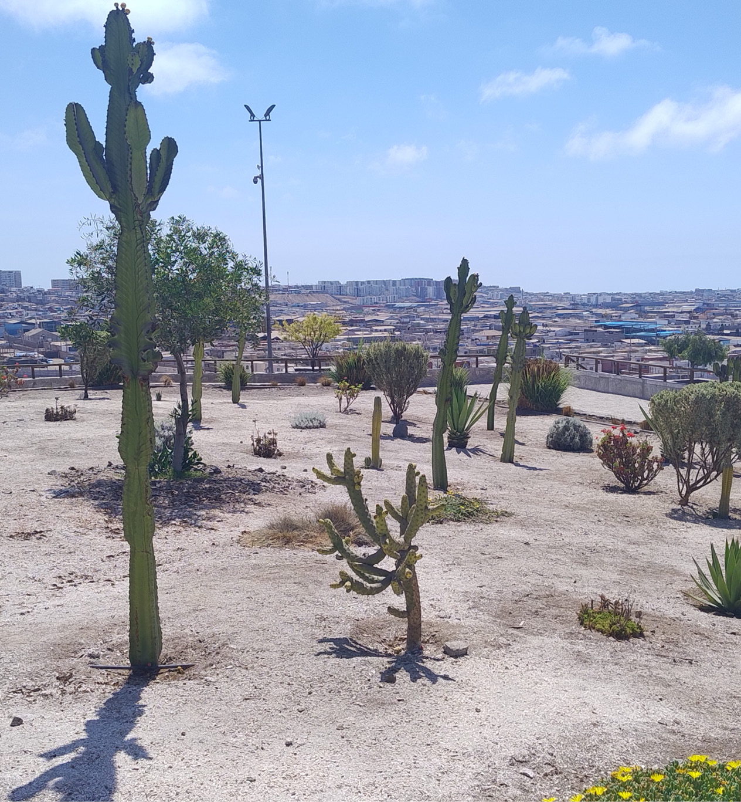

Con gran satisfacción presento ante ustedes la Memoria de Gestión Institucional de la Corporación Nacional Forestal (CONAF) Región de Tarapacá, correspondiente al período 2022–2026. Este documento recoge los principales avances, desafíos y aprendizajes obtenidos en la gestión de un territorio marcado por los contrastes entre nuestro altiplano ancestral, el desierto más árido del mundo y su litoral.
Durante estos cuatro años, enfrentamos un escenario complejo en lo climático, social y presupuestario. Estos desafíos pusieron a prueba nuestra capacidad institucional, impulsándonos a responder con pertinencia, eficiencia y un profundo compromiso público. En este contexto, reafirmamos nuestra misión: proteger, conservar y restaurar el patrimonio natural de Tarapacá, promoviendo una relación sostenible con las comunidades que habitan estos ecosistemas.
Entre los logros más destacados de este período se encuentra el fortalecimiento de la gestión del Parque Nacional Volcán Isluga y Reserva Nacional Pampa del Tamarugal, a través de acciones de conservación de la biodiversidad, inversión en infraestructura y profundización del trabajo conjunto con comunidades indígenas aymara bajo un enfoque de cogestión y pertinencia cultural.
Asimismo, avanzamos en la prevención y combate de incendios forestales, con énfasis en la planificación territorial, el fortalecimiento de la coordinación interinstitucional y el contacto directo con las comunidades. Las estadísticas reflejan una mejora sostenida en la capacidad de respuesta regional, en un trabajo constante con otros organismos del Estado y actores locales.
En materia de forestación y restauración ecológica, consolidamos iniciativas orientadas a la protección de especies como el tamarugo y el algarrobo, fundamentales para los ecosistemas del desierto, así como acciones para mitigar los efectos de la desertificación y el cambio climático.
Nuestro compromiso con la educación ambiental y la participación ciudadana se tradujo en múltiples talleres, jornadas educativas, y la creación de espacios de diálogo con comunidades escolares, pueblos originarios, organizaciones sociales y gobiernos locales.
Creemos firmemente que el desarrollo sostenible solo es posible si se construye desde los territorios junto a sus protagonistas.
Todo este trabajo ha sido posible gracias a un equipo humano comprometido, a la colaboración interinstitucional y al respaldo de nuestra Dirección Ejecutiva. Agradezco profundamente la dedicación de cada uno/a de los funcionarios/as de CONAF Tarapacá, quienes han hecho de este periodo una etapa de avances significativos.
Finalmente, esta memoria no solo busca informar, sino también transparentar nuestra gestión, rendir cuentas a la ciudadanía y sentar las bases para una nueva etapa de trabajo institucional, en la que seguiremos enfrentando desafíos ambientales urgentes, como la escasez hídrica, la pérdida de biodiversidad y la adaptación al cambio climático.
Reciban un atento saludo, junto a la invitación a seguir construyendo juntos una región más verde, justa y resiliente.
NATALIA ORTEGA OSSES


FUNCIONES INSTITUCIONALES
El marco normativo forestal en Chile ha experimentado una transformación histórica reciente, pasando de una corporación de derecho privado a un servicio público con mayores facultades. El nuevo Servicio Nacional Forestal, creado oficialmente mediante la Ley N° 21.744, publicada el 23 de mayo de 2025. Esta ley establece su estructura como un servicio público descentralizado, bajo la vigilancia del Ministerio de Agricultura.
Entre sus principales funciones destacan:
Misión
Garantizar la conservación, restauración y el manejo sustentable de los ecosistemas boscosos y xerofíticos del país, para satisfacer la demanda actual y futura por bienes y servicios ecosistémicos y contribuir al desarrollo territorial, de los pueblos originarios, las comunidades vulnerables y la valoración de la biodiversidad en un escenario de crisis climática.
En la región de Tarapacá esta misión se expresa en un contexto de alta fragilidad ecológica, marcada por la presencia del Desierto de Atacama, el altiplano andino y valles interiores que albergan ecosistemas únicos y especies endémicas, muchas de ellas amenazadas por el cambio climático y la intervención humana.
Visión
“Ser una institución reconocida por liderar la gestión forestal y la conservación del patrimonio natural de Chile, trabajando en alianza con las comunidades y contribuyendo activamente a la sustentabilidad ambiental del territorio”.
La Dirección Regional de CONAF Tarapacá asume esta visión impulsando una gestión territorial participativa, intercultural y basada en evidencia científica, fortaleciendo la vinculación con pueblos originarios, gobiernos locales, actores públicos y privados, y organizaciones de la sociedad civil.


OBJETIVOS ESTRATÉGICOS INSTITUCIONALES
La gestión institucional se orienta por un conjunto de objetivos estratégicos que buscan fortalecer la conservación y el manejo sustentable de los ecosistemas boscosos y xerofíticos, así como su aporte al desarrollo territorial y a la resiliencia frente a la crisis climática. Estos lineamientos establecen las prioridades de acción de la Corporación, integrando la protección de la biodiversidad, la gestión sostenible del territorio y el fortalecimiento de la institucionalidad pública.
Conservación: Asegurar la conservación de los ecosistemas boscosos y xerofíticos tanto dentro como fuera de las Áreas Silvestres Protegidas del Estado, reduciendo el riesgo de desastres ambientales de origen antrópico y natural, con un enfoque preventivo frente a incendios forestales y otros daños ecológicos.
Manejo de Ecosistemas: Promover la gestión y manejo multifuncional de los paisajes y ecosistemas boscosos y xerofíticos, fomentando la restauración de bosques nativos y formaciones xerofíticas, el uso de soluciones basadas en la naturaleza y prácticas forestales sustentables que resguarden los componentes ambientales.
Monitoreo: Desarrollar sistemas de monitoreo a distintas escalas que permitan identificar y anticipar procesos naturales y antrópicos que afectan la biodiversidad y la provisión de bienes y servicios ecosistémicos, fortaleciendo la toma de decisiones basada en evidencia.
Arborización: Impulsar acciones para la creación y fortalecimiento de áreas verdes que contribuyan a la resiliencia de ciudades y territorios, integrando el patrimonio cultural y promoviendo el trabajo con pueblos originarios y comunidades vulnerables.
Política Pública: Promover el diálogo técnico-político y el desarrollo de instrumentos de política pública orientados a la mitigación y adaptación al cambio climático, con enfoque territorial y articulación a nivel local, regional, nacional e internacional.
Alianzas: Fomentar la generación de alianzas estratégicas y la colaboración público-privada para fortalecer la gestión institucional y avanzar en el cumplimiento de metas asociadas al cambio climático y la conservación de los ecosistemas.
Empleos: Generar oportunidades de capacitación y empleo vinculadas a la protección, conservación y manejo de los ecosistemas boscosos y xerofíticos, contribuyendo al desarrollo territorial y al bienestar de pueblos originarios y comunidades vulnerables.
Transparencia Pública: Garantizar la transparencia en el uso de los recursos públicos y en la gestión institucional, promoviendo una administración eficiente, la entrega oportuna de información y el desarrollo de las personas dentro de la organización.
MARCO NORMATIVO
La labor de CONAF se enmarca en diversas leyes, reglamentos y políticas públicas. A nivel regional, se consideran además los instrumentos de planificación territorial y la normativa ambiental vigente.
Normativa clave
Ley N° 18.362: Crea el Sistema Nacional de Áreas Silvestres Protegidas del Estado (SNASPE). Es la piedra angular que permite la administración de parques y reservas en la región, asegurando la preservación de ecosistemas únicos como el Salar de Huasco o el Pampa del Tamarugal.
Ley N° 21.600: (Complementaria al periodo) Crea el Servicio de Biodiversidad y Áreas Protegidas (SBAP), marcando la transición hacia un modelo de gestión integrada de la naturaleza.
Ley N° 21.744 (2025): Crea el Servicio Nacional Forestal (SERNAFOR) como servicio público descentralizado, reemplazando a la CONAF (entidad de derecho privado) para la gestión, fiscalización y manejo sustentable de bosques.
Ley N° 20.283: Sobre Recuperación del Bosque Nativo y Fomento Forestal. Vital para la regulación de especies xerofíticas y la protección de formaciones vegetacionales nativas en zonas áridas.
Ley N° 19.300: Ley sobre Bases Generales del Medio Ambiente, marco general para la protección ambiental en Chile.
Ley Marco de Cambio Climático (Ley N° 21.455): Transversaliza nuestra gestión, obligando a que los planes regionales de manejo y prevención de incendios consideren variables de resiliencia climática.
ENFOQUES TRANSVERSALES DE GESTIÓN
La Dirección Regional de CONAF Tarapacá trabaja con los siguientes enfoques transversales:
• Interculturalidad: Reconociendo la importancia del trabajo conjunto con pueblos originarios, especialmente el pueblo aymara, respetando su cosmovisión y conocimientos ancestrales.
• Equidad de género: Promoviendo la participación activa de mujeres en programas forestales, brigadas y espacios de toma de decisiones.
• Adaptación al cambio climático: Integrando criterios de resiliencia y sostenibilidad en los planes y proyectos institucionales.
• Participación ciudadana: Fortaleciendo los espacios de diálogo con comunidades y actores locales, especialmente en territorios rurales y de conservación.
ESTRUCTURA ORGANIZACIONAL REGIONAL
La Dirección Regional de CONAF Tarapacá cuenta con una estructura operativa adaptada a las particularidades del territorio, incluyendo funciones técnicas, administrativas y de fiscalización, está compuesta por:
A nivel territorial, se cuenta con oficinas provinciales y puestos operativos en zonas estratégicas como el altiplano y el Tamarugal.

